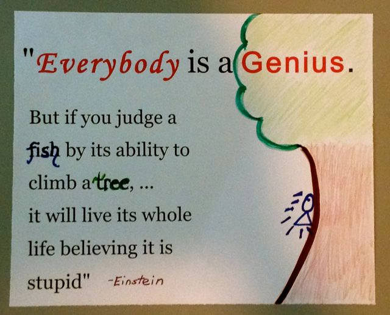
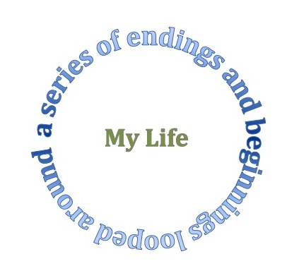

“ Maybe there is something you’re afraid to say, or someone you’re afraid to love, or somewhere you’re afraid to go. It’s gonna hurt. It’s gonna hurt because it matters” -John Green
“Strong is fighting. It’s hard, and it’s painful, and it’s everyday. It’s what we have to do. And we can do it together. But if you’re too much of a coward, then burn” -Buffy from Buffy the Vampire Slayer, 3x10
“Anyone can love a rose, but it takes a great deal to love a leaf. It’s ordinary to love the beautiful, but it’s beautiful to love the ordinary” ~Unknown
“The Buddha said that suffering was caused by desire, we’d learned, and that the cessation of desire meant the cessation of suffering. When you stopped wishing things wouldn’t fall apart, you’d stop suffering when they did” -John Green, Looking for Alaska
“ No quantity of work which is mere institutionalism can ever recompense for the loss of spontaneity and the more fundamental virtues in our best life, such as neighborship, friendship, the occasional call, which is not mechanical” -George Bellamy